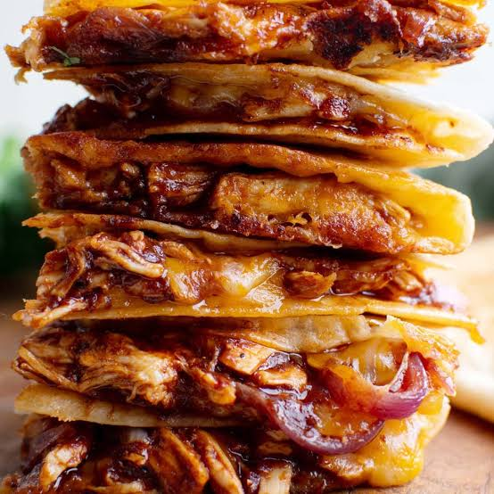

Why This Recipe Works
This recipe uses the tenderness and flavor of the BBQ sauce and the cheese to create a delecious meal.

This recipe uses the tenderness and flavor of the BBQ sauce and the cheese to create a delecious meal.
